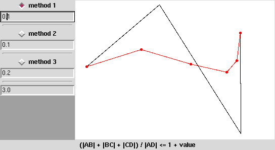

| Autor: | Wojciech Muła |
|---|---|
| Dodany: | 7.02.2007 |
Oczywiście standardowy sposób aproksymacji polega na wyznaczenia punktów P(t) ze stałym krokiem parametru t. Przy małym kroku (gęstym próbkowaniu) efekty są bardzo dobre, ale to nie zawsze jest dobre rozwiązanie — głównie chodzi o koszty obliczeniowe.
Pisałem o sposobach określania, czy krzywa Beziera jest „płaska” i że jednym z zastosowań jest rysowanie krzywej, tj. przedstawienie jej jak najwierniej za pomocą łamanej. Adaptywny podział krzywej polega na rekurencyjnym dzieleniu krzywej na coraz mniejsze łuki do chwili, gdy dany fragment nie będzie dostatecznie „płaski” — wówczas można zastąpić go odcinkiem.
Na animacji niżej widać, że tam, gdzie krzywa jest płaska użyto małej liczby odcinków, tam gdzie krzywa się „wygina” punkty są rozmieszczone gęściej.
Przedstawiam małe demo, które pokazuje jak sprawują się różne metody określania „płaskości”:
Program do działania wymaga kilku małych bibliotek, które zawierają procedury związane głównie z grafiką 2D: